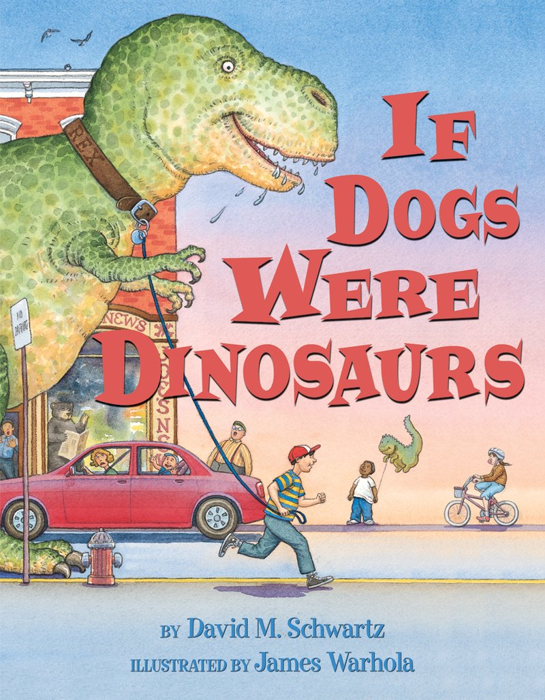

This week in Language Arts we are working on the following high frequency words. We will have a spelling test on these words on Friday, please study them with your child to help them be prepare:
For 1st and 2nd Grade:
- could, find, funny, green, how, little, one, or, see, sounds
For 4th Grade:

- which, about, vacation, finally, chocolate, through, until, all, do, if
We will also be reading "If Dinosaurs were Dogs" by David M. Schwartz. While reading this book we will be doing projects to help us:
- retell the story
- sequence the story parts by beginning, middle, and end
- writing our own new ending.
1st and 2nd Grade
We are learning how to perform basic addition and subtraction. To help us we have been practicing counting with a number line and with ten frames. We have also been practicing math language: MORE and LESS along side add and take away.This week we will be working on addition facts for number 1-5. For some of our students we will be working on double digit substraction and regrouping.
Addition with 1's Quiz Addition with 2's Quiz Addition with 3's Quiz Addition with 4's Quiz
4th Grade
Fourth grade students will be working on memorizing multiplication facts for 7, 8, and 9. They will also be working on time elapsed and counting various combinations of money when given a money amount.
In Social Studies, we are learning about monuments in the United States. We have already learned about the White House, St. Louis Arch, Mount Rushmore, and the Statue of Liberty. Next, we will learn about the Alamo, Washington Monument, and the Lincoln Memorial. We will also be picking one of these to build later!
This week we will be learning about our "Inquiry Skills" and Science Tools. We will be working with fruits in a "Fruits Protection" experiment and "Fruit Mass" experiment. In these experiments we will be using our inquiry skills to observe and makes notes about what we see. We will then use science tools to figure out which fruits have more mass.